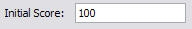
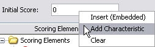
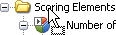
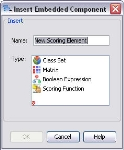
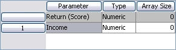
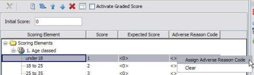
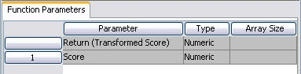
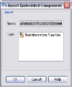

Scorecard
A Scorecard is a method by which a Score is allocated to a record.
Score is a numeric value that provides an indication of predicted future behaviour, such as whether the customer or applicant will be a good or bad risk, the likelihood that they will purchase a new product, revolve a balance on a credit card, or respond to a marketing campaign for example.
The Final Score from a Scorecard is produced by accumulating individual score values assigned from significant indicators that are used inside the Scorecard and applying any final transformation function. These indicators are termed scoring elements and are made available to the Scorecard as components. The inclusion of scoring elements in a Scorecard and the score values assigned are the result of model development processes. The Scorecard is the physical representation of the model.
Scorecards produce scores (and other associated derivative information such as score deviations) that are numbers. The scorecard allow score values and expected scores to be input (or calculated using scoring functions) up to the maximum scale / precision that is possible. The scorecard allows input of 17 digits plus sign with decimal point (positioned) anywhere in those 17 digits for score values, expected scores and initial scores.
Scoring Elements
Scoring elements are based on components from a list of:
- Class set
- Boolean Expression
- Matrix
- Scoring Function
Each scoring element has a number of outcomes and each outcome is assigned a score value. When a record is processed through the scorecard it will fall into one outcome for each element and therefore be allocated a single score value for each element. These scores are added together along with an initial score value to produce the Final Score.
Input Data Transformation
The Input Data Transformation field is an optional field that is used to create embedded input data transformation script. If input data transformation script has been defined it will be executed prior to the execution of the scorecard.
Final Transformation
The final transformation field is used to apply a function to transform the score accumulated from the initial score and the scoring elements. The score may need to be recalibrated to match other similar scorecards or to present the score in a different way.
For more information on the Final Transformation Function see Define a Transformation function.
Graded Score Result
The optional graded Score Result classes the Final Score after the application of any Final Transformation to produce a score index. The index can then be used for segmentation or classification of scores elsewhere in the system for example in a Treatment Tree. As the index forms part of the scorecard it will be maintained even if the scorecard is exported out of/into another system.
Scoring rules consist of: the initial score, the scoring elements to be used, the scores allocated to each outcome, and optionally if Adverse Reason Code processing is employed; allocation of expected scores and Adverse Reason Codes. Two additional optional fields are the Input Data Transformation field and the Final Transformation field. The Input Data Transformation field can be used to define embedded Input Data Transformation Script that will be executed prior to the execution of the Scorecard. The Final Transformation field can be used to define a function that transforms the score accumulated from the initial score and the scoring elements.
Scoring rules are defined in the Scoring Element tab of the Scorecard Editor.
A Scorecard can be created from the Explorer window.
| You will only be able to add a component type that has been allowed for the selected folder. If it is not allowed it will not be listed and therefore cannot be selected. |
To create a Scorecard
- From the Explorer right click at the required folder level and select Add a component.
- Select Scorecard from the list of available components.
- In the Create a Component screen enter the name of the Scorecard.
- Select the Open new components in component editor check box.
- Click on the OK button.
The Scorecard editor will open allowing you to edit the Scorecard as required.
The Scorecard name will be listed in the Explorer under the selected folder level. The component is identified by the icon.
If you do not wish the editor to open, keep the check box de-selected. From the Explorer window right click on the Scorecard and select Open. The Scorecard Editor will open allowing you to now define the scoring rules.
To define the scoring rules
The Initial Score is the starting point for scoring values. The Initial Score can be a constant numeric value that is assigned to all records, it can be the value from a selected characteristic which means that each record may start the scoring from a different value or it can be a scoring function.
Depending on the user's requirements, a value that contains 17 digits plus sign with decimal point (positioned) anywhere in those 17 digits can be input for Initial Scores.
To assign the Initial Score
To assign a constant value
- Click in the Initial Score box and type in a numeric value, for example:

To assign a characteristic
- Right click in the Initial Score box and select Add Characteristic

- The Select Characteristic dialog will be launched. Select the required Logical Data Source and then the required characteristic. Only numeric type characteristics are valid for Initial Score.
To assign a scoring function
Either:
- From the Resources window, drag and drop a scoring function into the Initial Score field.
- The Parameters Mappings dialog will be launched from where you can select the characteristic(s) to be used as the input parameters for the scoring function. See the Remove or update the parameter mappings for more information.
Or:
- Right click in the Initial Score box and select Insert (Embedded)
The Insert Embedded Component dialog will be launched. - Type a name for the embedded Scoring Function and click on the OK button.
The Scoring Function editor will be launched.
You can now add scoring elements and assign score values that will be added to the Initial Score.
Components can be added to the Scorecard to be used as scoring elements. Components added from the Resources window are referenced by the Scorecard and other components that use them.
| Only Class Set, Matrix, Boolean Expression, Scoring Function and Transformation Functions are supported for this version. |
|
Class Sets, Matrices and Index Tables which have been defined against Logical Data Models can only be used in scripting components. If any are used in a Scorecard, an error message similar to the following will be displayed: |

Add a referenced component
| In the Initial Score field, only a Scoring Function component can be referenced where as in the Final Transformation field, only a Transformation Function component can be referenced. All the supported components except for Transformation Function can be referenced at the scoring element and interval level. |
- In the Scoring Elements tab of the Scorecard editor, click on the Resources window. The valid component types will be listed.
- Expand the component type list to display all the available components of that type. For example:

- Drag and drop the required component onto the Scoring Elements tab.

| To add a component to the end of the elements list, you must drop the component onto Scoring Elements.  To add a component between existing elements, drag and drop the component before an existing element. |
The component will be displayed as a scoring element. You can now proceed to allocate scores and the adverse reason code processing (optional) details.
or
Components can be referenced from within the Scorecard; this means that it can be changed outside of the Scorecard and may be shared by other components. Alternatively a component can be created from within the Scorecard editor and will be embedded into the Scorecard. This means the component details are only used by this Scorecard and can only be edited from within the Scorecard.
| Only Class Set, Matrix, Boolean Expression, Scoring Function and Transformation Functions are supported for this version. |
To insert an embedded component
| In the Initial Score field, only a Scoring Function component can be embedded whereas in the Final Transformation field, only a Transformation Function component can be embedded. All the supported components except for Transformation Function can be embedded at the scoring element and interval level. |
- In the Scoring Element column, right click on the Scoring Elements (to add the component to the end) or on a particular scoring element name (to insert above this element) and select Insert (Embedded). The Insert Embedded Component dialog is displayed.

- In the Name field, enter a unique name (within the Scorecard) for the component.
- In the Type list, select the required component type.
- Click OK to confirm the selection and close the dialog.
- The component name will be displayed in the Scoring Elements list in the position selected.
| You can also insert an embedded component from the Palette window. You can do this by dragging and dropping the Embedded component onto the Scoring Elements folder or on a particular scoring element name. |
The relevant component editor is displayed for you to edit the embedded component. See the relevant component editor for more details on how to do this.
Each outcome of an element will be assigned a score value. The outcome that the record is processed through determines the actual score value applied. The scores from each outcome are accumulated to produce a final score.
To assign a score value to an outcome
- Click in the <> brackets in the Score column for an outcome and type in a value.
If there is already a value in the <> it will be overwritten by the new value.
In addition to typing in a value the user can define a scoring function to the element.
Scoring functions enable the user to invoke the system to calculate a score using a formula. When the scorecard editor is open all the scoring functions that have been created will be listed within the Scoring Functions area in the Resources window.
When a scoring function is opened an editor similar to that of the User Defined Function editor is opened. Like all user defined functions the scoring function requires a Return parameter, however, unlike a user defined function, the user cannot amend the Return (Score) parameter; the data type and array size of this parameter are both fixed. In addition to this parameter the scoring function can have additional input parameters, although this is not mandatory since the scoring function could be defined to return just a constant.
A scoring function can be created from the Explorer window.
| You will only be able to add a component type that has been allowed for the selected folder. If it is not allowed it will not be listed and therefore cannot be selected. |
Scoring functions enable the user to invoke the system to calculate a score using a formula. When the scorecard editor is open all the scoring functions that have been created will be listed within the Scoring Functions area in the Resources window.
To create a scoring function
- From the Explorer right click at the required folder level and select Add a component.
- Select Scoring Function from the list of available components.
- In the Create a Component screen enter the name of the scoring function.
- Select the Open new components in component editor check box.
- Click on the OK button.
The Scoring Function will open allowing you to define a scoring function.
The scoring function name will be listed in the Explorer window under the selected folder level. The component is identified by the icon.
If you do not wish the editor to open, keep the check box de-selected. From the Explorer window right click on the scoring function and select Open.
To define a scoring function
- With the scoring function editor open, define the input parameter(s) in the Function Parameters by over typing Parameter with a unique name.
| It is mandatory to have at least one input parameter in a Scoring Function. |
- Select a parameter type (string, numeric or date), and optionally specify an array size.
| Dynamic arrays are not supported in Scoring Functions |
In the example below Parameter has been replaced with Income. 
- Right click in the Function Parameters table and select Add Parameter or Delete to add or delete parameters from the table.
- In the script editor, add script freehand. Remember, parameter names are case sensitive.
Using the above example, the following could be entered to perform a calculation on Income to obtain a score. - Click on the Compile icon
 in the tool bar to check the script syntax.
in the tool bar to check the script syntax.

| You cannot test a scoring function using Tester unless the script is valid. |
The system will provide you with information regarding the validity of the script. Details of any errors will be displayed to provide you with information so that you can correct them.
A scoring function enables the user to invoke the system to calculate a score using a formula.
Scoring functions enable the user to invoke the system to calculate a score using a formula. When the scorecard editor is open all the scoring functions that have been created will be listed within the Scoring Functions area in the Resources window.
To add a referenced scoring function to a scorecard
- With the scorecard editor open in the Resources window expand the Scoring Function list to display all the available scoring functions.
- Drag and drop the required scoring function onto the scorecard.
The system will open the Parameter Mappings dialog. - Click on the button to access the Select Characteristic dialog.
- In the Search field
 type the word or part of a word that makes up the name of the characteristic.
type the word or part of a word that makes up the name of the characteristic.
The Select Characteristic dialog will focus in on a particular characteristic or set of characteristics that match this word.

| If the Select Characteristic dialog is displaying the characteristics in a tree view, the Logical Data Source will need to be fully expanded to see all the characteristics that match the word(s). |
- Select the characteristic you require.
- Click on the OK button.
- The Select Characteristic dialog closes and the characteristics you have selected will be added to the Parameter Mappings dialog.
- Click on the OK button and the new scoring function will be added to the scorecard.
- Use the or to move the selected element one place up or down in the list of elements. When the scorecard is processed the elements are processed in the order in which they are listed in the scorecard.
Scoring functions enable the user to invoke the system to calculate a score using a formula. When the scorecard editor is open all the scoring functions that have been created will be listed within the Scoring Functions area in the Resources window.
Scoring functions can be referenced from within the scorecard; this means that it can be changed outside of the scorecard and may be shared by other scorecards. Alternatively, a scoring function can be created from within the scorecard editor and will be embedded into the scorecard. This means the component details are only used by this scorecard and can only be edited from within the scorecard.
To insert a scoring function into a scorecard
- In the Scoring Element column, right click on the Scoring Elements (to add the component to the end) or on a particular scoring element name (to insert above this element) and select Insert (Embedded). The Insert Embedded Component dialog is displayed.
- In the Name field, enter a unique name (within the scorecard) for the component.
- In the Type list, select the required component type, in this case Scoring Function.
- Click OK to confirm the selection and close the dialog.
- The scoring function editor is displayed for you to edit the embedded component. See the define a scoring function for more details on how to do this.
- Once you have defined the embedded scoring function, click on the Close Internal Editor button to return to the scorecard
The scoring function will be displayed in the Scoring Elements list in the position selected.
| You can also insert an embedded component from the Palette window. You can do this by dragging and dropping the Embedded component onto the Scoring Elements folder or on a particular scoring element name. |
- Right click on the name of the scoring function and select Update Mapping. The Parameter Mappings dialog will open.
- Next to the parameter that needs a characteristic assigned, click on the button to access the Select Characteristic dialog.
- In the Search field type the word or part of a word that makes up the name of the characteristic.
The Select Characteristic dialog will focus in on a particular characteristic or set of characteristics that match this word.
| If the Select Characteristic dialog is displaying the characteristics in a tree view, the logical data source will need to be fully expanded to see all the characteristics that match the word(s). |
- Select the characteristic you require.
- Click on the OK button.
- The Select Characteristic dialog closes and the characteristics you have selected will be added to the Parameter Mappings dialog.
- Click on the OK button and the new parameter mapping will be applied to the scoring function.
- Use the or to move the scoring function one place up or down in the list of elements. When the scorecard is processed the elements are processed in the order in which they are listed in the scorecard.
Continue adding scoring elements to your scorecard as required.
When a scoring function has been added to a scorecard the user will need to select the characteristic(s) to be used as the input parameters for the scoring function.
A scoring function enables the user to invoke the system to calculate a score using a formula. When a scoring function has been added to a scorecard the user will need to select the characteristic(s) to be used as the input parameters for the scoring function.
If the scoring function is updated outside of the scorecard, for example within the script a characteristic has been added or removed, then the Parameter Mappings dialog should be used in conjunction with the Synchronise icon to update the scoring function that is being used in the scorecard.
To update the mapping
- With the Scorecard editor open, right click on the name of the scoring function and select Update Mappings to access the Parameter Mappings dialog
- Click on the button to access the Select Characteristic dialog.
- In the Search field type the word or part of a word that makes up the name of the characteristic.
The Select Characteristic dialog will focus in on a particular characteristic or set of characteristics that match this word.
| If the Select Characteristic dialog is displaying the characteristics in a tree view, the Logical Data Source will need to be fully expanded to see all the characteristics that match the word(s). |
- Select the characteristic you require.
- Click on the OK button.
- The Select Characteristic dialog closes and the characteristics you have selected will be added to the Parameter Mappings dialog.
- Click on the OK button and the new parameter mapping will be applied to the scoring function.
- Use the or to move the scoring function one place up or down in the list of elements. When the scorecard is processed the elements are processed in the order in which they are listed in the scorecard.
To synchronise the mapping
- With the Scorecard editor open, right click on the name of the scoring function and select Update Mappings to access the Parameter Mappings dialog
- Click on the Synchronise Parameters icon
The contents of the Parameters Mapping dialog will be updated to match the characteristic held in the Scoring Function.
- Repeat from step 2 in the previous section to select any new characteristics that have been added.
To remove or update the mapping
- With the Scorecard editor open, right click on the transformation function displayed in the Final Transformation field and select Clear to remove the transformation function from the scorecard.
Continue defining the scorecard as required.
Continue adding scoring elements to your scorecard as required.
Optionally:
Expected Score is part of the adverse reason code processing. When the record is processed the difference between the score value and the expected score creates a score deviation. The score deviation is used to prioritise the adverse reason code listing. See Adverse Reason Code Preferences for details.
Expected score can be assigned to an individual outcome or can be assigned to all the outcomes for an element at the same time.
To assign an expected score
To multiple outcomes for an element:
- Click in the <> in the Expected Score column next to the element name. Enter a value and hit enter on the keyboard. The value will propagate to each outcome in the scoring element. You can change a single outcome by following step 2.
To a single outcome:
- Click in the <> brackets in the Expected Score column for an outcome and type in a value. If there is already a value in the <> it will be overwritten by the new value.
An adverse reason code provides an indication of why an application may be declined based on the score allocated.
Adverse reason codes are returned in priority order based on the value of the score deviation (difference between expected score and score value) and the adverse reason code preferences.
| An adverse reason code table must already have been created and must contain the required codes. |
To assign an adverse reason code
- Right click in the Adverse Reason Code column for the outcome, and select Assign Adverse Reason Code

The Code Finder dialog is launched. - Select the required Adverse Reason Code Table and then the required code.
The code will be added to the Adverse Reason code column:
| If adverse reason code processing is used, every outcome of every scoring element must be assigned an adverse reason code. |
- Repeat steps 1 and 2 for all element outcomes.
| When assigning expected score or adverse reason code, the assignment must be across the whole Scorecard. So if an expected score or adverse reason code is assigned to any outcome then an expected score and adverse reason code must be assigned to every outcome of every element within the Scorecard. |
The Graded Score Result tab is used to classify the final score into ranges and then assign an index number to each range.
To define a Graded Score Index
- With the Scorecard editor open, click on the Graded Score Result tab.
- In the first row, overtype the index number as required. You will only be allowed to enter text characters in the Index field.
- Enter a range for the row. Only a numeric range can be entered.
- Repeat steps 2 to 3 as required.
|
For numeric values the range can be a single discrete value or a range of values define by a lower value and an upper value e.g. 20-30. By default, the lower value is included in the range and the upper value is excluded. When you type in the range you can simply enter lower value-upper value as in the 20-30 example above and then select enter on your keyboard. Using the default settings this range will then appear as >=20-<30. Alternatively you can type in the operators that determine whether the value(s) are included or excluded. For help on entering range values you can click on the Range Helper icon |

{kind=link}
{kind=link}
{kind=link}
{kind=link}
{kind=link}
{kind=link}
{kind=link}
{kind=link}
{kind=link}
{kind=link}
{kind=link}
{kind=link}
{kind=link}
Graded Score Indexes and their ranges can be removed from the Graded Score Result table.
To delete a Graded Score Index
- With the Graded Score Index editor open, select the Graded Score Index that you wish to be deleted.
- Right click and select Delete.
The Graded Score Index and range will be removed from the table.
To delete a continuous row of Graded Score Indexes
-
With the Graded Score Index editor open, with your cursor, select a continuous number of rows.
-
Right click on any of the selected rows and select Delete.
All the Graded Score Indexes and ranges that you have selected will be removed from the table.
To delete alternate rows of Graded Score Indexes
-
With the Graded Score Index editor open, and with the Ctrl key of your keyboard selected, with your cursor select the rows you wish to delete.
-
Right click on any of the selected rows and select Delete.
All the selected Graded Score Indexes and ranges will be removed from the table.
The Scorecard Id is an 8 character string field whose default is 0. Should this number need to be defined, then it is set within the Properties window of a scorecard.
There is no validation to ensure that the scorecard id entered it unique, this is the responsibility of the user.
To create a scorecard id
- With a Scorecard open in the scorecard editor, within the Properties window, click next to Scorecard ID and type a value for the scorecard id.
|
The value typed cannot be more than 8 characters in length. Any leading zeros added will be removed if entered as the id. Scorecards that are imported from SMG3 will an id of zero. |
Repeat as necessary for all the scorecards.
Input Data Transformation Script is used to define Derived Data Script that will be executed prior to the execution of the Scorecard.
To define an Input Data Transformation Script
- With the Scorecard editor open and the Scoring Elements tab selected, right click in the Input Data Transformation field and select Insert (Embedded).
The system will open the common derived data script editor. - Edit a derived data script
- Once you have defined the embedded input data transformation, click on the Close Internal Editor button to return to the Scorecard.
The Input Data Transformation will be assigned to the field.
| The default name given to this script will be Input Data Transformation, you will not be able to amend this name. |
Input data transformation script is used to define the derived data script that will be executed prior to the execution of the scorecard.
To remove the input data transformation
- With the Scorecard editor open and the Scoring Elements tab selected, right click on Input Data Transformation and select Clear.
The input data transformation will be removed from the scorecard.
The Transformation function will transform the score accumulated from the initial score and scoring elements. When a Scorecard editor is open, all the transformation functions created will be listed under the Transformation Function section in the Resources window
When a transformation function is opened, an editor that is similar to that of the User Defined Function editor is opened. Like all user defined functions the transformation function requires a Return parameter, however, unlike a user defined function, the user cannot amend the Return (Transformed Score) or Score parameter; the data type and array size of this parameter are both fixed. When the transformation function is assigned to a Scorecard, the score will be automatically picked up from the Scorecard and used in the transformation. Additional input parameters can be used to transform the score, but this is not mandatory.
A transformation function is created from the Explorer window.
| You will only be able to add a component type that has been allowed for the selected folder. If it is not allowed it will not be listed and therefore cannot be selected. |
The Transformation function will transform the score accumulated from the initial score and scoring elements. When a scorecard editor is open, all the transformation functions created will be listed under the Transformation Function section in the Resources window.
To create a transformation function
- From the Explorer, right click at the required folder level and select Add component.
- Select Transformation Function from the list of available components.
- In the Create component dialog, enter the name of the transformation function.
- Select the Open new components in component editor check box.
- Click on the OK button.
The Transformation Function editor will open allowing you to define a transformation function.
The transformation function name is listed in the Explorer window under the selected folder level. The component is identified by the icon.
{kind=link}
If you do not wish the editor to open, keep the check box de-selected. From the Explorer window right click on the transformation function and select Open.
To define a transformation function
- With the transformations functions editor open, define additional input parameter(s) (if required) in the Function Parameters area of the editor by right clicking in the Parameter column and selecting Add Parameter.
| It is mandatory to have at least one input parameter in a Transformation Function. |
- Type a unique name for this added parameter
- Select a parameter type (string, numeric or date) and optionally specify an array size.
The following is an example of the transformation editor with no additional parameters added
- In the transformation script editor, add script freehand to enter the relevant script you want to define. Note that parameter names are case sensitive.
Using the example above, the following script can be entered to transform the score. - Click on the Compile Script icon in the tool bar to check the script syntax.
{kind=link}
{kind=link}
The system will provide you with information regarding the validity of the script. Details of any errors will be displayed in the Output panel so that you can correct them accordingly.
| You cannot test a transformation function with the Interactive Tester unless the script is valid. |
The Transformation function will transform the score accumulated from the initial score and scoring elements. When the scorecard editor is open, all the transformation functions created will be listed under the Transformation Function section in the Resources window.
To add a referenced transformation function
- With the scorecard editor open in the Resources window of the scorecard, expand the Transformation Function list to display the available transformation functions.
- Drag and drop the selected transformation function into the Final Transformation field.
- The Parameter Mappings dialog is displayed.
- Click on the icon to display the Select Characteristics dialog.
- In the Search field type the word or part of a word that makes up the name of the characteristic.
The Select Characteristic dialog will focus in on a particular characteristic or set of characteristics that match this word.
| If the Select Characteristic dialog is displaying the characteristics in a tree view, the logical data source will need to be fully expanded to see all the characteristics that match the word(s). |
- Select the characteristic you require.
- Click on the OK button.
- The Select Characteristic dialog closes and the characteristics you have selected will be added to the Parameter Mappings dialog.
- Click OK
The transformation function will be added in the Final Transformation field of the scorecard.
The Transformation function will transform the score accumulated from the initial score and scoring elements. When the scorecard editor is open, all the transformation functions created will be listed under the Transformation Function section in the Resources window.
Transformation functions can be referenced from within the scorecard; this means that it can be changed outside of the scorecard and may be shared by other scorecards. Alternatively, a transformation function can be created from within the scorecard editor and will be embedded into the scorecard. This means the component details are only used by this scorecard and can only be edited from within the scorecard.
To insert a transformation function into a scorecard
- In the Scoring Elements tab, right click in the Final Transformation field and select Insert (Embedded). The Insert Embedded Component dialog is displayed.

- In the Name field, enter a unique name (within the scorecard) for the transformation function.
- In the Type list, select the required component type, in this case Transformation Function.
- Click OK to confirm the selection and close the dialog.
- The transformation editor is displayed for you to edit the embedded component. See define a transformation function for more details on how to do this.
- Once you have defined the embedded transformation function, click on the Close Internal Editor to return to the scorecard.
The transformation function will be displayed in the Final Transformation field of the scorecard.
{kind=link}
| You can also insert an embedded component from the Palette window. You can do this by dragging and dropping the Embedded component onto the Scoring Elements folder or on a particular scoring element name. |
- If you have added an additional parameter you will need to assign a characteristic to it. Right click on the name of the transformation function and select Update Mapping. The Parameter Mappings dialog will open.
- Next to the parameter that needs a characteristic assigned, click on the button to access the Select Characteristic dialog.
- In the Search field type the word or part of a word that makes up the name of the characteristic.
The Select Characteristic dialog will focus in on a particular characteristic or set of characteristics that match this word.
| If the Select Characteristic dialog is displaying the characteristics in a tree view, the logical data source will need to be fully expanded to see all the characteristics that match the word(s). |
- Select the characteristic you require.
- Click on the OK button.
- The Select Characteristic dialog closes and the characteristics you have selected will be added to the Parameter Mappings dialog.
- Click on the OK button and the new parameter mapping will be applied to the transformation function.
When the scorecard is processed the assigned transformation function will be used to transform the score produced by scorecard.
Once the user has successfully created a scorecard, the user will be able to test it using the Batch or Interactive Tester.
The user can test a scorecard either by manually typing in data for the input characteristics referenced in the scorecard or by performing a test against a known data source.
The script used in the input data transformation can be tested independently from the scorecard if required.
To perform an interactive test
To test a scorecard manually by entering data into the relevant fields for the input characteristics, use the Interactive Tester.
To perform a batch test
To test a scorecard using data from a .csv file, from the Explorer window, right click on the component and select New Test Project to use the Batch Tester.
The Scorecard can be validated using the Validate icon.